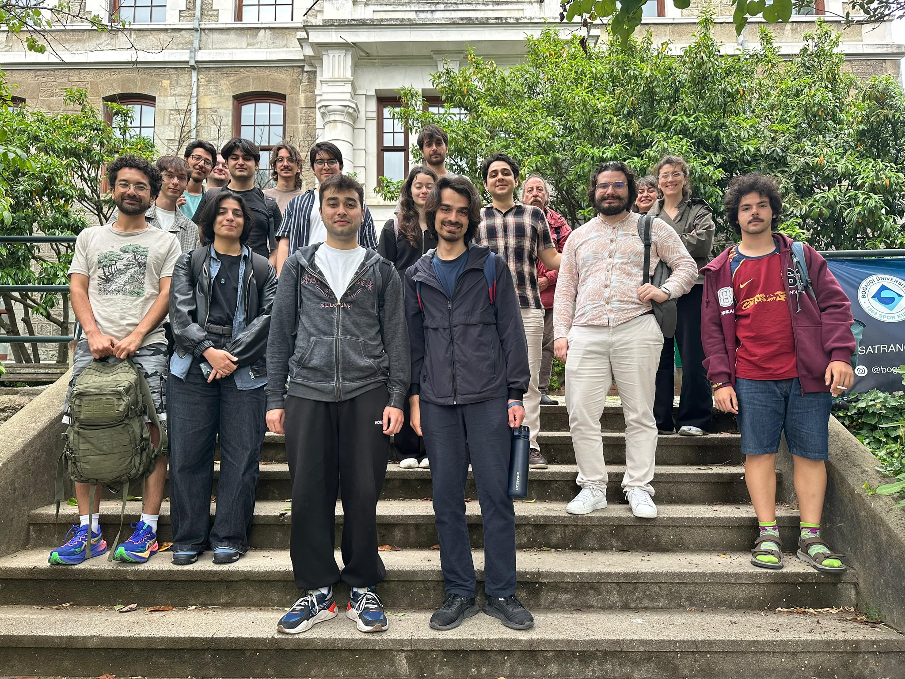

MATH 490 Undergraduate Project Seminars
Spring 2026
Department of Mathematics
Boğaziçi University
10:00–15:45 · TB130 Coordinated by Erdem Efe Delen

Documents
Presentation schedule
| Time | Presentation |
|---|---|
| 10:00–10:30 | Formalizing Quantifier Elimination from Model Theory in LeanSalih Erdem Koçak, Yağız Kaan Aydoğdu, Yusuf Demir |
| 10:30–11:00 | Decomposability of 2-Forms and Plücker RelationsRonahi Haykır |
| 11:15–11:45 | Unbounded Difference Between Topological and Geodesic ComplexityTuna Onat |
| 11:45–12:15 | The Least Quadratic Non-residueEmre Bektaş, Yiğit Can Karakaş |
| 12:15–13:30 | Lunch break |
| 13:30–14:00 | Arithmetic Fuchsian Groupsİbrahim Yüksel |
| 14:00–14:30 | Dispersive Decay Estimate of the Modified Zakharov–Kuznetsov EquationYusuf Erenay Güner |
| 14:45–15:15 | Counting Additive Patterns via Higher-Order Fourier AnalysisErdem Efe Delen |
| 15:15–15:45 | Explicit Local Class Field Theory via Lubin–Tate TheoryKayra Bolat |